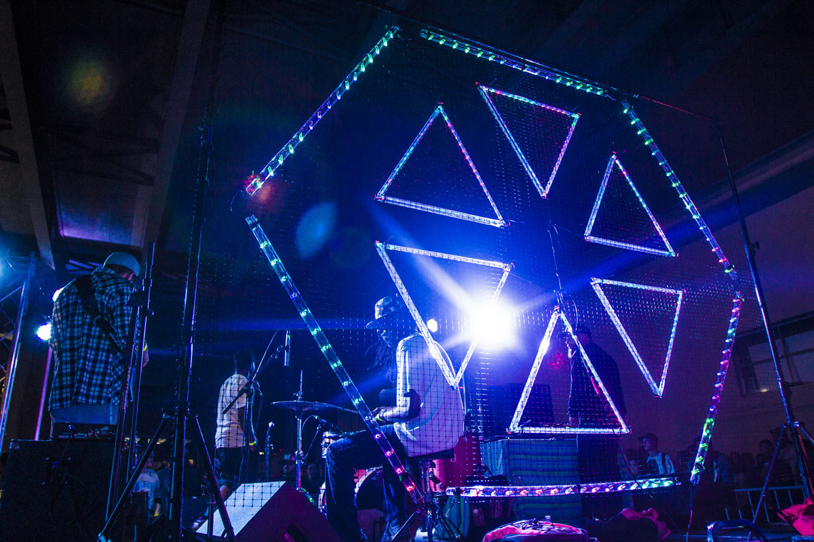
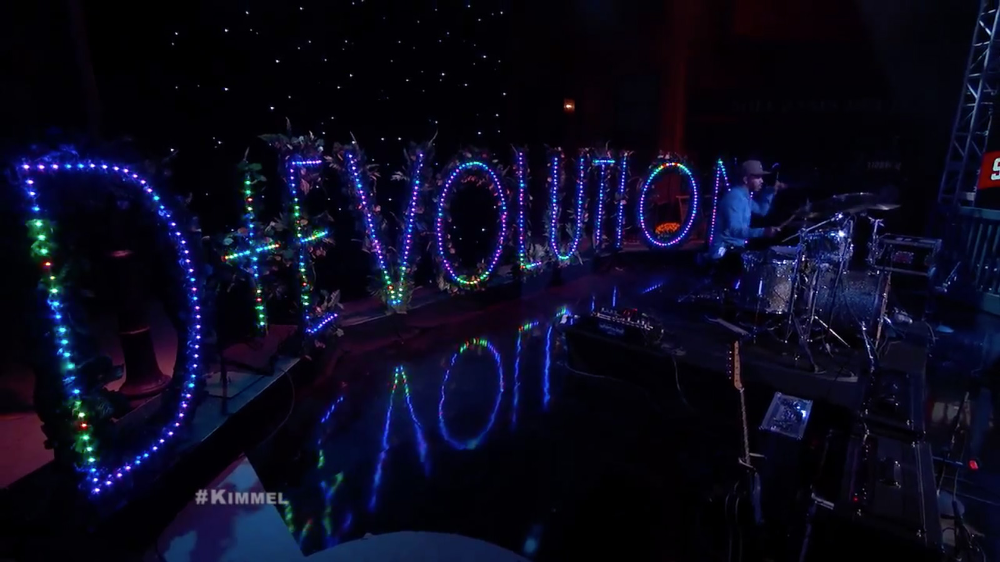
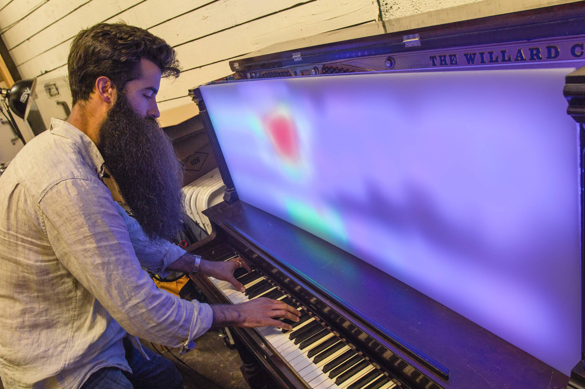
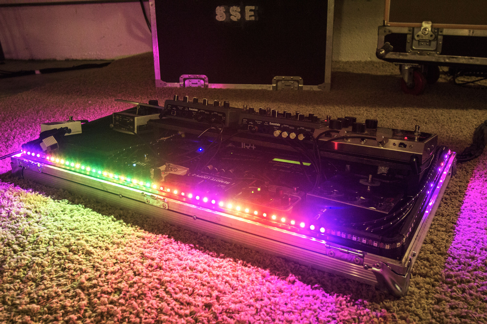
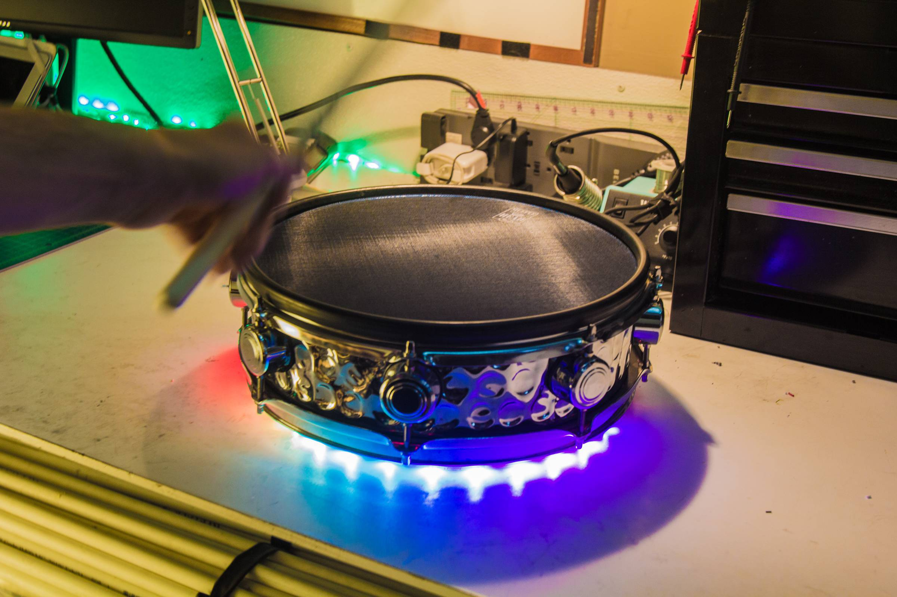
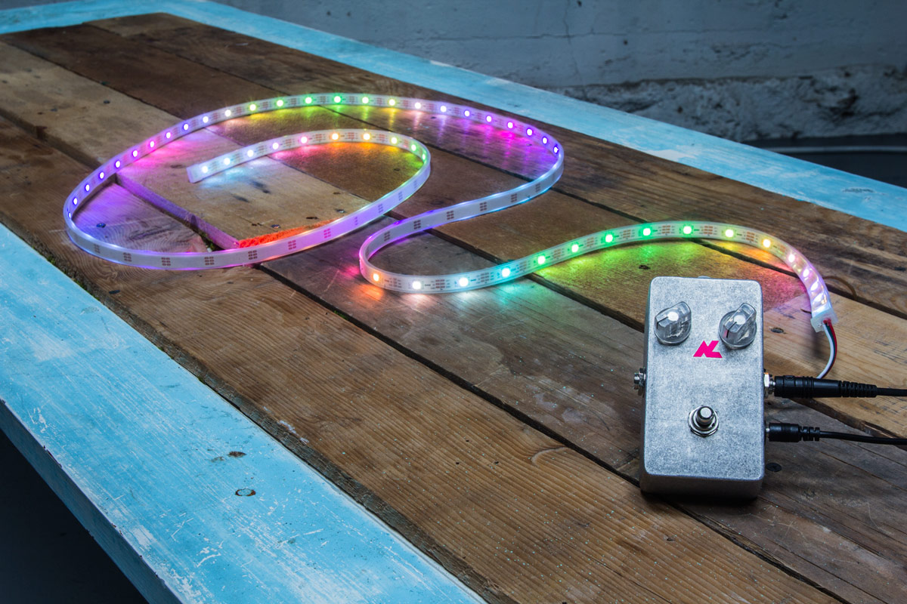

CymaSpace presents the Audiolux One
The AudioLux One is a new kind of LED lighting controller developed by the team at CymaSpace that will intelligently translate sound and music into light, color and movement. The system is specifically designed for musicians, producers and small events and provides simple, plug-and-play functionality. No complex programming or electronics know-how is required.
Make it your own. Any size LED project is possible.
Digital individually addressable LED strips are thin, flexible, power efficient and can be cut to any length which allows lighting effects to be incorporated in tight spaces and even into your existing music equipment.
For ambitious projects, it’s possible to build interactive LED installations on a large scale, with the Audiolux One sending pixel data to hundreds (even thousands of LEDs!). see some examples of such projects that we have built below.





Hackable, open-source software.
For the software programming-savvy, the hardware has been designed around the Open-Source Arduino architecture allowing for complete freedom to customize the visualization or modify the hardware functionality of the in-built knobs and footswitch. As the community of Audiolux One users grows, you can expect to see new visualizations being created and shared. If you don’t know how to program, you can still upload new presets over USB with any Windows/Mac/Linux computer and change up the visualizations.

Every purchase of an Audiolux One benefits CymaSpace.
A percentage of proceeds from every sale of the Audiolux One will be donated directly to CymaSpace to help our organization continue it’s mission of making performing arts more inclusive and engaging to the Deaf and Hard-of-Hearing.